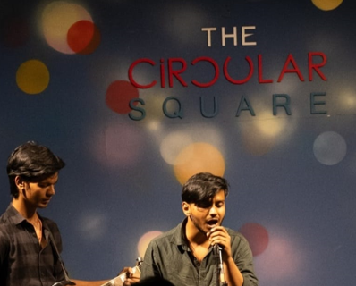
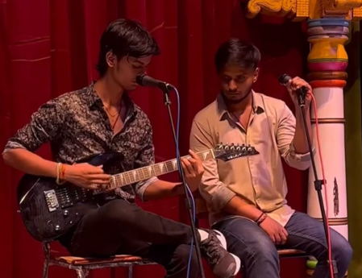
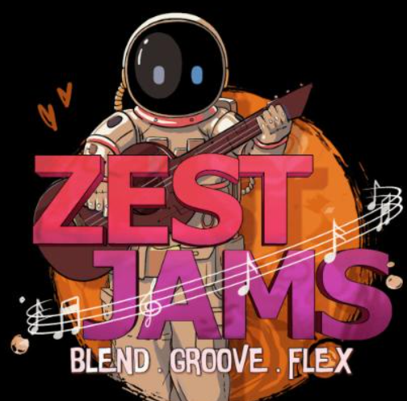

Unraah can provide music for different events and music preferences, such as background music, cover songs, jazz, classical, or specialty music.
Unraah can learn a specific song for an event, such as a corporate anthem, wedding first dance, or memorial song.
The very first performance of Unraah was at the Circular Square, Bengaluru.
Performance at one8 commune and Jamooraa events.
They also had an Amazing evening at Church Street for public jamming session.
Recently Unraah hosted its first event called Zest jams at Happiness cafe in Kormangala, Bengaluru. It was an amazing events where many people enjoyed jamming with the members of Unraah team.
